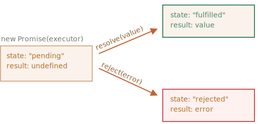
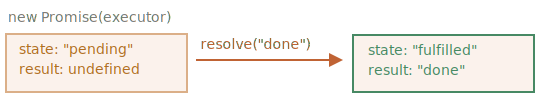

Mise en situation :
Imaginez que vous êtes un grand chanteur et les fans vous demandent jour et nuit votre prochaine chanson.
Pour avoir un peu de paix, vous promettez de leur envoyer dès que celle-ci est publiée. Vous donnez à vos fans
une liste d’abonnement. Ils peuvent y ajouter leur adresse mail, comme cela, quand le single est sorti, tous les
emails reçoivent votre single. Et même si quelque chose arrive, comme un feu dans le studio, et que vous ne pouvez
pas sortir le single, ils en seront aussi notifiés.
Tout le monde est content : vous, puisque l’on vous laisse plus tranquille, et vos fans parce qu’ils savent qu’ils ne rateront pas la chanson.
C’est une analogie réelle à un problème courant de programmation :
L’analogie n’est pas la plus correcte, car les promesses en JavaScript sont un peu plus complexes qu’une simple liste d’abonnement : elles ont d’autres possibilités mais aussi certaines limitations. Toutefois c’est suffisant pour débuter.
La syntaxe du constructeur pour une promesse est :
La fonction passée à new Promise est appelée l’exécuteur. Quand new Promise est créée, elle est lancée automatiquement. Elle contient le producteur de code, qui doit produire un résulat final. Dans l’analogie ci-dessus : l’exécuteur est le “chanteur”.
Ses arguments resolve (tenir) et reject (rompre) sont les fonctions de retour directement fournies par JavaScript. Notre code est inclus seulement dans l’exécuteur.
Quand l’exécuteur obtient un résultat, qu’il soit rapide ou pas, cela n’a pas d’importance, il appellera une des deux fonctions de retour :
Donc, pour résumer : l’exécuteur s’exécute automatiquement et tente d’effectuer un travail. Ensuite, il devrait appeler resolve s’il a réussi ou reject s’il y avait une erreur.
L’objet promise retourné par le constructeur new Promise a des propriétés internes :
state (état) – initialement à "pending" (en attente), se change soit en "fulfilled" (tenue) lorsque resolve est appelé ou "rejected" (rompue) si reject est appelé.
result – initialement à undefined se change en value quand resolve(value) est appelé ou en error quand reject(error) est appelé.

Voici un exemple d’un constructeur d’une promesse et d’une fonction exécutrice simple avec un “code produit” qui prend du temps (utilisant setTimeout) :
On peut voir deux choses en lançant le code ci-dessus :
Après une seconde de “traitement” l’exécuteur appelle resolve("done") pour produire le résultat. Cela change l’état de l’objet promise :

Pour résumer, l’exécuteur devrait réaliser une tâche (normalement quelque chose qui prend du temps) puis appelle resolve ou reject pour changer l’état de l’objet promesse correspondant.
Une promesse qui est soit tenue soit rejetée est appelée “settled” (acquitttée) par opposition à une promesse initialisée à “en attente”.